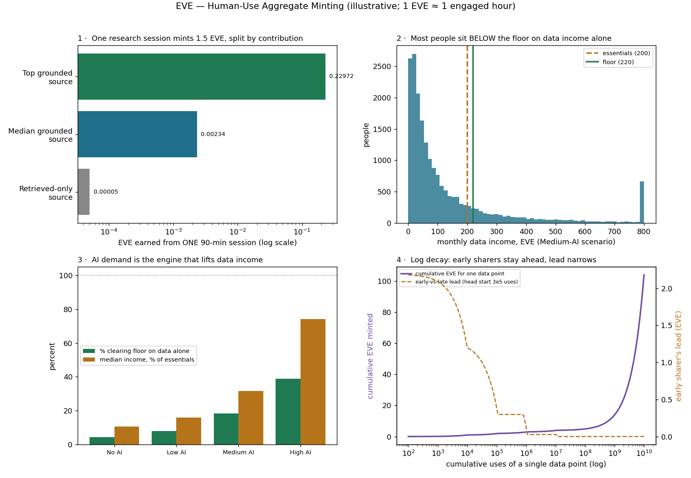

In plain language
Companion to RESULTS - Human-Use Aggregate Minting. Companion added July 11, 2026 — the v1–v5-era runs predate the plain-language convention; written from the committed RESULTS as it stands today (including any verification-pass corrections already applied in that file), with no reinterpretation.
The question
When a human researches in EDEN, their engaged time mints a bounded pot of EVE that is split among the data the answer actually drew on — a small discovery pool (10%) shared by everything retrieved, a large grounding pool (90%) split by how load-bearing each source was. Human use is free to the searcher, the mint goes to the sources, and the total is capped by human attention, so it can't run away. Does the mechanism stay sane — and can data alone be a living? (All numbers illustrative; essentials set at 200 EVE/month, floor at 220.)
What we found
It stays sane, and the honest income answer is "supplement, not salary — by design." One 90-minute deep session mints 1.50 EVE across 3,000 retrieved candidates and 200 actually-grounded sources: the top source earns 0.230 EVE, a median grounded source 0.0023, a merely-retrieved one 0.00005. Covering a month's floor from this channel alone means being the top source in ~960 deep sessions a month (~32 a day), or a median source in ~94,000. Across a 20,000-person population, median data income runs from 21 EVE/month (11% of essentials, no AI demand) to 148 EVE/month (74%, high AI demand) — AI paying to mine data at scale is the engine that makes universal data income possible. Raw data income is very unequal (Gini 0.66), but the floor collapses that to 0.04–0.45, and the more AI demand lifts people on its own, the less compression the floor has to do. The tiered usage-decay delivers the anti-concentration property by construction: a billion uses of one data point earns ~14 EVE (logarithmic compression), a trillion ~10,004 (the flat floor rate); and an early sharer's 300,000-use head start shrinks ~400× (1.20 EVE down to 0.003) while never going negative — early contributors stay permanently ahead, but the gap stops compounding. The Matthew effect, defused at the mechanism level.
The honest catch
"61–96% below the floor on data alone" is not a poverty rate: this sim isolates the data channel only, real participants also earn from everything else they make (content, tools, services, creative work), and the floor at 1.10× essentials sits under all channels combined. Everything here is illustrative and steady-state — AI demand is a scenario multiple, not a forecast, and the usage-concentration exponent (α = 1.3), research-hours distribution, essentials level, 10/90 split, and Zipf grounding weights are assumptions, not measurements. One design note: because the floor rate is flat, truly ubiquitous data is never capped — probably fine, but let the floor decay or cap it if you want hard compression. And the single number that decides whether data income is a rounding error or most of a living — real AI willingness-to-pay — is a pilot question (Stage 4 of the Validation & Testing Plan).
One line
Minting a bounded, attention-anchored pot per research session and splitting it by grounded contribution works and stays sane — but data by itself is a broad, shallow supplement (a median of 11% of essentials with no AI demand, 74% with high), AI demand is the lever that scales it, and the floor across all income channels remains the actual survival guarantee.
Words used here (added July 18, 2026 — plain-language house rule; the text above is unchanged). Minting — creating brand-new EVE; here a research session's verified, engaged human time creates a small, capped pot. Grounded vs retrieved — retrieved sources were merely fetched as candidates; grounded ones actually carried weight in the answer, and they split the 90% pool. Median — the middle case: half earn more, half less. Gini — a 0-to-1 lopsidedness score: 0 means everyone equal, 1 means one person takes everything; raw data income sits at a very unequal 0.66, which the floor pulls down to 0.04–0.45. Logarithmic compression — growth that slows to a crawl as numbers explode: a billion uses pays ~14 EVE, a trillion only ~10,004 — each extra zero adds less. Zipf — the standard "a few giants, a long tail of minnows" pattern, used here for how much each source contributes. α (alpha) = 1.3 — the assumed dial for how concentrated usage is; higher would hand the big sources proportionally more. Matthew effect — "to those who have, more will be given": early winners compounding into permanent runaway leaders — defused here by the usage-decay. Steady-state — the settled long-run picture, not the launch scramble. Floor — the guarantee of earning essentials (at 1.10×), sitting under all income channels combined; data income is a supplement on top of it.
Figures

Technical results
Tests the model we converged on for minting EVE from human use of data: mint a time-bounded total, then split it by grounded contribution. It also includes the AI machine-pay channel (as a demand scenario) and the per-data-point usage-decay curve. Anchor: 1 EVE ≈ one engaged human hour at genesis; the Governor normalizes nominal levels over time, so everything is reported relative to a local essentials basket (set illustratively at 200 EVE/month, floor = 220). All numbers are illustrative. Files in this folder: human_use_minting_sim.py, results_human_use.json, fig_human_use.png.
The model in one line
A human research session is just another asset the person engages, so it mints engaged_time × B × W_effort — and that bounded pot is split among the data points the answer drew on: a small discovery pool (10%) shared by everything retrieved, and a large grounding pool (90%) split by how load-bearing each source was. Human use is free to the searcher, the mint goes to the sources, and it's bounded by human attention (so it can't run away). AI use is machine-pay — a transfer priced on the decay curve — modelled here as a demand multiple of the human pool.
Part 1 — one 90-minute research session
A 90-minute deep session (active engagement) mints 1.50 EVE total, split across 3,000 retrieved candidates and 200 actually-grounded sources:
| Source role | Earns from this one session |
|---|---|
| Top grounded source | 0.230 EVE |
| Median grounded source | 0.0023 EVE |
| Retrieved-only (in the candidate pool) | 0.00005 EVE |
To earn a full month's floor (220 EVE) purely from this channel, your data would need to be the top source in ~960 deep sessions/month (~32/day), or a median grounded source in ~94,000 sessions. This is the "broad-shallow" reality made concrete: a single source in a single query earns a sliver of a cent's worth of EVE; meaningful income requires your data to be either very frequently load-bearing, or spread across a huge number of queries (i.e., many data points each grounded somewhere).
Part 2 — population (20,000 people who both produce data and research)
Everyone researches (minting to others) and owns data (earning when others use it). Income is decoupled from your own research — you earn when others use your data, weighted by quantity × quality, with a mild concentration on the most-used data. The headline, by AI-demand scenario:
| Scenario | Median data income | …as % of essentials | % below floor on data alone | Inequality (Gini) pre→post-floor |
|---|---|---|---|---|
| No AI | 21 EVE/mo | 11% | 96% | 0.66 → 0.04 |
| Low AI | 32 | 16% | 92% | 0.66 → 0.08 |
| Medium AI | 64 | 32% | 82% | 0.66 → 0.22 |
| High AI | 148 | 74% | 61% | 0.66 → 0.45 |
Three things fall out of this, and they matter:
- AI demand is the engine. Median data income climbs from 11% to 74% of essentials as AI demand grows. The same vast, shallow human data is worth little when only humans browse it and meaningful when AI is paying to mine it at scale — so AI isn't only the payer, it's the demand that makes universal data income possible.
- Data income is a supplement, not a salary — by design. Even in the High-AI scenario, the median person covers ~3/4 of essentials from data alone. Important caveat: this sim isolates the data channel only. Real participants also earn from everything else they make (content, tools, services, creative work). So "61–96% below floor on data alone" is not a poverty rate — it's "data by itself isn't a full living," which is exactly the broad-shallow point. The floor (1.10× essentials) is the survival backstop underneath all channels combined.
- The floor crushes inequality. Raw data income is very unequal (Gini 0.66, because data production and usefulness are skewed), but after the floor the Gini collapses (to 0.04–0.45). The more AI demand lifts people above the floor on their own, the less compression the floor has to do — which is the healthy direction.
Part 3 — the per-point usage decay (your tiered design)
Per-point earnings, used n times (rate 1e-4 → 1e-5 → 1e-6 → 1e-7, each tier minting 1 EVE, then a 1e-8 floor):
| Cumulative uses | Cumulative EVE earned |
|---|---|
| 10,000 | 1.00 |
| 1,000,000 | 2.89 |
| 1,000,000,000 | 13.89 |
| 1,000,000,000,000 | ~10,004 |
The earnings grow logarithmically through the decay tiers (a billion uses → ~14 EVE — strong compression, the anti-concentration property you wanted), then linearly at the floor rate for ultra-ubiquitous data (a trillion uses → ~10,000 EVE). Worth a design note: because the floor rate is flat, genuinely ubiquitous data is not capped — probably fine (truly universal data earning real money seems right), but if you want hard compression you'd let the floor decay too or cap it.
The early-vs-late fairness property holds and is striking: give an early sharer a 300,000-use head start over an identical later point, and the early one's lead shrinks from 1.20 EVE (at 10⁴ total uses) to 0.003 EVE (at 10⁸ uses) — a ~400× narrowing — while never going negative. Early contributors stay permanently ahead; the gap stops compounding and quietly closes, exactly as you intended. It's the Matthew effect defused at the mechanism level.
What the mock-up establishes
The "time-bounded mint, split by grounded contribution" model works and stays sane: a session mints a bounded amount anchored to human attention (non-inflationary, self-limiting), the split is tractable because retrieval/grounding is explicitly traceable, and the per-point decay delivers the anti-concentration fairness by construction. The economics confirm the honest framing we'd been circling: data is a broad, shallow, demand-gated supplement; AI demand is what scales it; and the floor — across all income channels, not just data — is the actual survival guarantee. Nothing here breaks; the open question it sharpens is empirical: how big is real AI data-demand? — because that single lever moves median data income from a rounding error to most of a living.
Honest limits
Illustrative and steady-state. Income is modelled data-channel-only (real people have other earnings), so floor-clearance here understates true income. AI demand is a scenario multiple, not a forecast, and is distributed by the same usage shares as human demand (a real model would let the fresh-premium favor new data and let demand concentrate differently). The usage-concentration exponent (α = 1.3), the research-hours distribution, essentials level, and the discovery/grounding split (10/90) are all assumptions, not measurements. The grounding weights are assumed Zipf. As with every sim here, this is an existence-and-sanity demonstration, not a prediction — the real number that decides whether data is a rounding error or a real income (AI willingness-to-pay) is a pilot question (Stage 4 of the Validation & Testing Plan).
Raw data